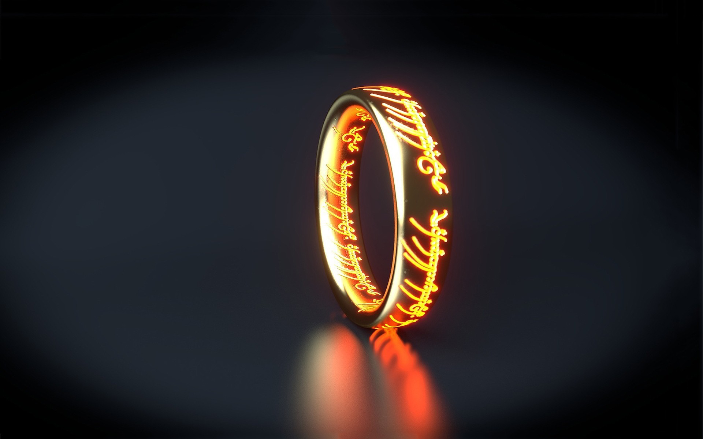

Lord of The Rings
Hall Of Scribes
Chronicle Gateway
Fourth Circle Archives
The Sealed Scroll
Hall of Scribes

J.R.R. Tolkien
Official Middle Earth Website
Alpha Coders for the images
The Return of The King
ChatGPT for the made up articles